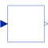
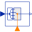

MISOMultiple Input Single Output continuous control block |

|
Information
This information is part of the Modelica Standard Library maintained by the Modelica Association.
Block has a vector of continuous Real input signals and one continuous Real output signal.
Parameters (1)
| nin |
Value: 1 Type: Integer Description: Number of inputs |
|---|
Connectors (2)
| u |
Type: RealInput[nin] Description: Connector of Real input signals |
|
|---|---|---|
| y |
Type: RealOutput Description: Connector of Real output signal |
Extended by (4)
|
Modelica.Electrical.Machines.SpacePhasors.Blocks Sets angle to zero when length is below threshold |
|
|
Modelica.Electrical.Machines.SpacePhasors.Blocks |
|
|  |
Modelica.Blocks.Routing Extract scalar signal out of signal vector dependent on IntegerRealInput index |
|
Modelica.Blocks.Math Output the sum of the elements of the input vector |